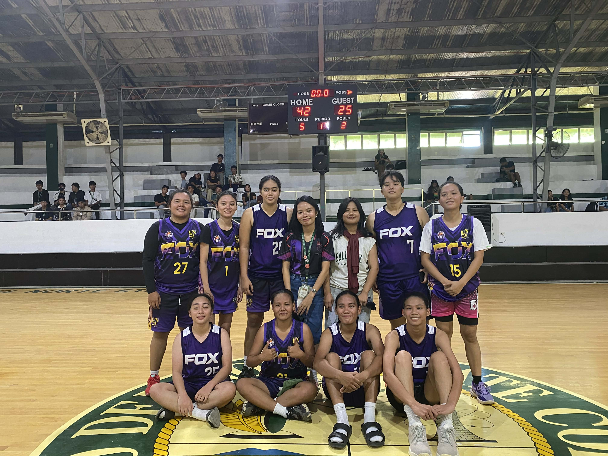
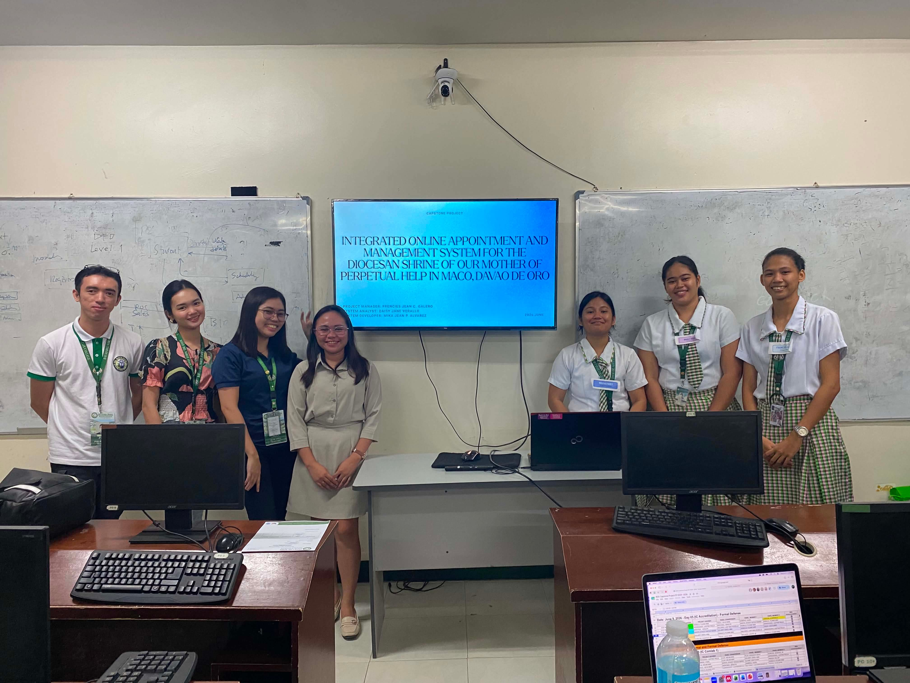

Name: Daisy Jane Verallo
Age: 22
Course: Bachelor of Science in Information Systems
School: Davao del Norte State College
Hello! My name is Daisy Jane Verallo, and I am a college student pursuing a Bachelor of Science in Information Systems (BSIS). I am passionate about learning and exploring the field of technology, particularly in coding, system development, and web design. As a student, I continuously strive to improve my knowledge and skills through academic projects and hands-on learning experiences. While I am still developing my expertise in programming, I am eager to learn more about coding and discover new technologies that can help create innovative and practical solutions. I look forward to growing as a future Information Systems professional and contributing to the ever-evolving world of technology.

Winning First Place in the Kalibulung Basketball Tournament was another unfogerttbable achievement. It was not just about becoming champions, but about the friendships, sacrifices, and teamwork that helped us reach our goal. These experiences have shaped me into a stronger, more determined individual who continues to learn, grow, and pursue success with humility and perseverance.

Achievements are not only measured by awards and recognication but also by the challenges we overcome along the way. Passing out Capstone Projec Outline Defense was one of the moments that taught me to trust myself and my team. Despite the nervousness and pressure, we stood confidently and successfully presented our ideas. It reminded me that growth happens when we step outside our comfort zone.